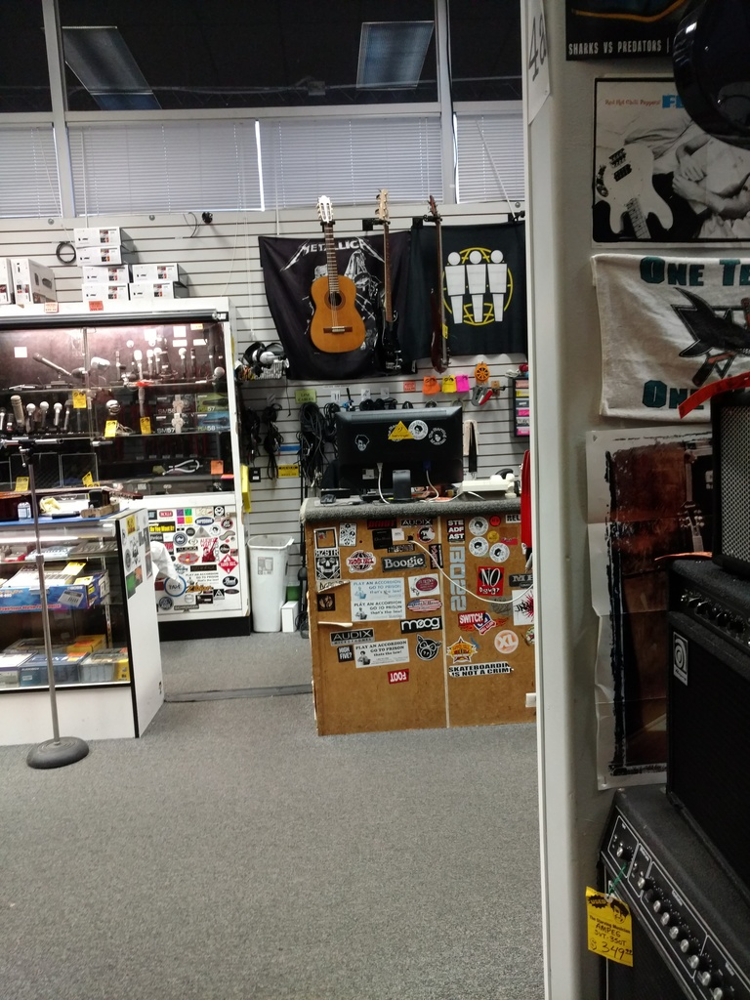

Paperasse, système et automobile
Bon, c’est pas tout ça, mais je suis venu pour bosser, moi. Et je veux bien être sympa, mais je vais pas complètement le faire pour la gloire. Comment, pour la grandeur de la France ? Mouais, enfin c’est pas ça qui va payer les factures… (Au fait, je vous ai parlé des loyers ici ? Eh ben il faudra que je le fasse un jour !). Bref, il va falloir faire un peu de paperasserie pour m’enregistrer côté employeur, et puis il va falloir ouvrir un compte en banque aussi (il parait qu’il y a que dans les films de Scorcese qu’on se fait payer en liquide…).
Alors, allons y dans l’ordre: Se faire enregistrer comme employé de la société. En fait, le responsable de l’administratif dans la boite n’étant pas là la semaine dernière, tout s’est déclenché cette semaine. À priori, plutôt simple, il ne faut pas grand chose: - Visa: check - Passeport: check (ça tombe bien, le visa est collé dedans, en général…) - Adresse: check - Numéro de sécu: Oops… Ça marche sans ? oui ? cool ! alors check !
Donc vendredi, on fait mon inscription dans le système de gestion RH, pas de problème, je devrais recevoir un mail de confirmation rapidement. Mail qui arrive environ une heure plus tard, pas de soucis. Ah, tiens, il faut que je me connecte pour remplir le formulaire I-9 (non, à priori, pas besoin du laisser passer A-39 :)). Ok, donc je me connecte avec mon numéro d’employé qui est indiqué dans le mail, facile, c’est quoi le mot de passe ? les 4 derniers chiffres de mon numéro de sécu… Sérieusement ? À quoi ça sert de laisser passer un numéro de sécu vide, si on en a besoin pour se connecter ??? Bon, je vais essayer de deviner ce qu’un développeur aurait pu mettre comme valeur par défaut… Vide ? nan… 0000 ? Non plus… Bon, je mettrais bien “NULL”, mais ça risque de se voir… Bon, on a un contact, chez le fournisseur du service ? Ok, on lui envoie un mail… Auquel il s’empresse de nous répondre d’appeler le support utilisateur. Je peux pas le blâmer, j’aurais fait pareil à sa place ! Forcément, la réponse tombe à midi, et mon après midi est remplie de réunions avec des clients… Sinon, j’aurais le temps d’appeler et ça serait nettement moins drôle (et on est au pays de Murphy, ne l’oublions pas…). Finalement, je réussi à planter une réunion en plein milieu (oui, je sais, c’est pas bien) pour appeler. Là, après avoir donné quelques preuves de mon identité (nom, prénom, date de naissance, adresse, téléphone, ce que j’ai mangé la veille et l’âge du capitaine), la dame me propose gentiment de me recréer un nouveau mot de passe. Donc ça y est, je suis enfin connecté et je peux remplir le formulaire I-9 (qui au passage est censé être rempli dans les trois jours après l’embauche…). Je me dis que finalement, ça aurait pu être bien pire, jusqu’à ce que je me retrouve face au formulaire I-9 (qui se remplit en ligne, vous l’aurez compris). Voyons, voyons, il faut donner quoi comme infos… Nom, prénom (ne pas oublier de mettre Pierre Virgil…), adresse, numéro de sécu, date de naissance,… Attendez, numéro de sécu ? M’en fout je met rien, on verra bien ce qui se passe… Continuons: Numéro de passeport, numéro USCIS (l’immigration américaine) ou numéro I-94 (vous le sentez venir, le laisser passer A-39 ou pas ?). Ok, c’est quoi, ces machins là ? Bah, ça doit être sur mon visa… Euh, non, on dirait pas… Ok, google, mon ami, c’est quoi un numéro USCIS et où est-ce qu’on le trouve ? Sur le visa ? Merci google… mais où, sur le visa, en vrai ? Ah, des sites qui expliquent que ça se trouve sur le visa d’immigrant, ce que je n’ai évidemment pas, vu que je n’ai pas une green card… Donc je n’ai pas de numéro USCIS, je note. Pas grave, je vais trouver mon numéro I-94 ! Google, tu es toujours là ? C’est quoi, le numéro I-94 ? Ah, I-94, c’est un formulaire aussi… J’ai rempli ça, moi ? C’est quoi d’abord, comme formulaire ? Ah, c’est la carte verte que l’on remplissait avant la mise en place d’ESTA ( = système d’exemption de visa de tourisme américain). Attendez, vous avez bien dit “remplissAIT” ? C’est vrai, ça, je l’ai pas eu, ce papier, en arrivant ! Donc vous me demandez le numéro écrit sur un papier que je n’ai pas rempli, c’est bien ça ? Merci la maison des fous ! (Ça y est, on y est…) Bon après pas mal de recherches qui dans l’ensemble m’ont bien fait comprendre comment ça marchait quand il fallait encore remplir ce #$@!&# de papier vert (au passage, plutôt que le droit à l’oubli sur internet, on pourrait pas se pencher un peu sur l’obsolescence es informations sur internet ?), je finis par tomber sur un site officiel de l’immigration qui me cause du formulaire I-94. Une fois sorti du vocabulaire légal américain (un régal, Shakespeare à côté c’est Oui-oui et son âne), je comprend que le site me propose de consulter mon numéro I-94. Ça c’est bien foutu, vu que je suis censé ne pas avoir rempli le document correspondant… Bon, ne chipotons pas, s’ils me disent que c’est ça mon numéro, je vais les croire… Ah oui, enregistrer le numéro quelque part, je sens qu’on va me le redemander, celui là ! Bon donc finalement, je vais réussie à le remplir mon formulaire I-9. Ah, mince, le numéro de sécu ! Bon, on a dit que j’allais cliquer sur valider en sifflotant d’un air détaché genre “C’est pas moi m’sieur le juge, je vous jure !”. Évidemment, j’ai une alerte me disant que je n’ai pas rempli le champ. Ah, mais si je veux, je peux re-cliquer sur valider pour confirmer que je ne veux pas le remplir… Ok, ne pas chercher à comprendre ! Bref, j’ai réussi à m’enregistrer dans le système RH de la boite, je devrais pouvoir être payé à la fin du mois… Tiens, c’est quoi ce lien “Planning des salaires” ? Ah, ok, on est payés deux fois par mois… Bizarre, mais pourquoi pas… Oops (I did it again… désolé !), le jour de paye c’est aujourd’hui… Il va me falloir un compte pour verser l’argent dessus…
D’où la deuxième partie de ce billet (oui, il y en a qui me reprennent sur mes anglicismes…): Ouvrir un compte en banque. Un samedi matin. Le lendemain du jour de la paye. Le dernier jour du mois. Autant vous dire que j’étais tout seul à aller à la banque ! Coup de bol, un gentil employé essayait de faire avancer la file en demandant aux gens pourquoi ils venaient, histoire de faire un tri et de répartir plus efficacement. Ok, en vrai, je l’ai surtout vu faire comprendre aux gens qu’ils étaient des boulets parce qu’ils pouvaient retirer ou déposer du liquide ou des chèques au distributeur. Mais qu’importe, ce brave monsieur allait sûrement m’aiguiller vers la bonne personne sans que j’ai trop à attendre. Enfin ça, c’était avant qu’il demande au gars devant moi pourquoi il venait et que l’autre lui tienne la jambe pendant 10 minutes pour lui expliquer que oui, il savait qu’il pouvait déposer de l’argent u distributeur, mais que comprenez-vous mon pôvre monsieur, hier il avait essayé et que ça n’avait pas marché, enfin si, mais ça lui disait versement accepté, puis versement refusé et du coup il a 14 lignes sur son relevé de compte en ligne qui disent “accepté” et “refusé” (sérieux, gars, tu as essayé 7 fois ? Un prof de yoga ou un adepte du zen, sans doute). Et comme mon employé de la banque s’est retrouvé coincé, il a bien fallu que j’attende que la dissertation sur la réparation du DAB et le fait qu’il devraient y mettre un panneau, quand même (note pour plus tard: faire un post sur les panneaux en Californie) se termine pour enfin voir le soulagement dans le regard de l’employé quand je lui ai dit que je venais ouvrir un compte (Cool, il va pas me prendre trop la tête, lui). Du coup, il me fout dans les pattes de sa collègue et c’est parti. L’avantage d’arriver en mode “je n’ai pas d’historique, même pas encore mon premier salaire”, c’est que même un banquier n’essaye pas de vous proposer de produit d’épargne. Dans les dents, mon conseiller de la banque postale ! Le dossier se remplit pas trop mal, même sans numéro de sécu (oui ici, réussir à faire une démarche sans numéro de sécu, c’est pas toujours évident). J’ai même eu le droit de remplir un dossier de demande de carte de crédit. Elle s’est même excusée que mon dossier ait besoin d’être étudié avant d’avoir l’accord, mais que c’est parce que c’est ma première demande, sinon, ça pourrait être automatique (subprime, anyone ?)… Du coup, je ressort avec mon dossier complet, il n’y a plus qu’à attendre la carte de débit et l’accord pour la carte de crédit. La classe, je vais pouvoir consommer comme un américain !! :)
En parlant de consommer, passons à la troisième et dernière partie de ce post (oui, j’assume): Ma location de bagnole se terminant dans une semaine, il va peut-être falloir que je m’affole pour en acheter une. Au passage, je découvre une nouvelle joyeuseté du système: Sans numéro de sécu, pas de permis californien (non, c’est pas un permis avec de l’ananas dedans), donc pas d’assurance. Or une des vérifications faite au passage du permis est l’assurance de la voiture (oui, ici on vient passer son permis avec sa voiture, sans commentaire). Logique ! Bon, en vrai, il y a moyen de conduire entre l’obtention du code et le passage de la conduite. Je pense que je ne comprendrai jamais leur rapport à la bagnole… Enfin bon, essayons de prendre le pouls du marché de la voiture d’occasion dans le coin, et commençons par aller jeter un oeil aux (nombreux) vendeurs de voiture du coin. Ça tombe bien, ils sont quasiment tous au même endroit. Bon par contre, c’est juste en face de mon magasin de musique de la dernière fois: ne pas craquer, ne pas craquer… Bon j’en choisis un au hasard, allons chez Toyota. Oui, je sais j’aurais aussi pu choisir Audi, mais j’ai un budget limité, voyez vous. C’est un peu le défaut de devoir payer une voiture comptant, ça a comme un effet sur le montant que vous acceptez d’y mettre. Bref, j’arrive chez Toyota, je me fais agresser par un vendeur (oui, je sais que c’est son job, mais quand même) qui tente d’abord de me fourguer une bagnole neuve. Puis quand je lui parle d’occase, il tente des occases qui à mon avis ont moins de kilomètres (pardon, miles) que les neuves d’avant, vu qu’elles sont quasiment au même prix. Du coup, je coupe court et lui annonce mon tarif. Je pense que même quand j’aurais ma voiture, je retournerai dans des concessions pour leur annoncer que je veux acheter une voiture avec ce budget, juste pour profiter du changement d’expression du vendeur. Du coup, il m’emmène dans l’annexe “voitures pas chères” de la concession (5 bonnes minutes de voiture pour y aller, quand même). On fait un rapide tour, j’en remet une couche en lui expliquant que je n’en suis qu’à la réflexion et du coup il me colle dans les pattes d’un vendeur local (je pense que je n’ai jamais vu un vendeur de voiture lâcher un client à un autre vendeur, entre nous). Il me présente quelques voitures, bien évidemment hors budget, et je l’achève en lui expliquant que non seulement je n’en suis qu’à la réflexion, mais qu’en plus, je n’ai pas l’argent, qu’il faut que je fasse le transfert. C’est marrant, ça a un peu coupé court à l’argumentaire de vente… Mais bon, j’ai vu ce que je voulais, j’ai une idée des prix et du type d’occase que je peux trouver en concession.
Ah, comme je suis là, si j’allais faire un petit tour dans mon nouveau magasin de musique préféré ? En plus, on m’a demandé des photos, j’ai même une excuse ! Donc je précise tout de suite, je n’ai toujours pas craqué, je m’en étonne moi même… Mais bon, j’avais promis des photos, les voici, histoire de bien comprendre le coup des bras de 7 mètres pour attraper certains instruments: (pour info, sur celle du mur de guitares, la zone au fond qui ressemble à un loueur de station de ski, c’est la zone guitares acoustiques/country/redneck/où-est-ce-que-je-gare-mon-pickup)
Et histoire de se rappeler qu’on est quand même dans la Baie de San Francisco: 
Bon, par contre, j’ai peut-être pas craqué en musique, mais j’ai découvert un autre magasin appelé Central Computers, du coup, ma réception WiFi s’est nettement améliorée… Et je suis en train de me battre avec un écran LCD programmable que j’ai soudé avec mes petits doigts… On va dire que j’ai trouvé un nouveau jouet pour m’occuper ! :)
La suite au prochain épisode.
Stay tuned,
– P.